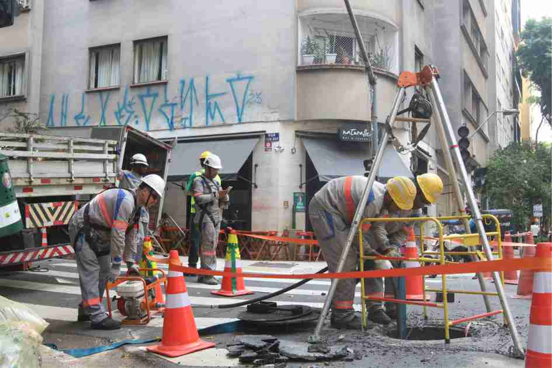

Chuva em SP: Temporal deixa mais de 900 mil de pessoas sem energia.
Cerca de 900 mil clientes continuam sem luz na capital e na Grande SãoPaulo desde que uma chuva forte com ventos recordes atingiu a região.A Enel culpa o que chamou de "evento climático extremo"
Vídeo Relacionado
Assista ao vídeo para entender mais sobre a notícia.
O que aconteceu
-
Moradores estão há quase 40 horas sem luz. Uma chuva repentina na
sexta (11) causou o desligamento de várias linhas de alta tensão e
subestações de energia, afetando, principalmente, as zonas oeste e sul
da capital e a região metropolitana.
-
Número de pessoas afetadas pode ser bem maior. O número de 900 mil
corresponde a pontos de instalação, mas em cada casa podem morar
várias pessoas.
-
Enel não dá prazo para o religamento total da energia. Nos canais de
atendimento, moradores recebem "previsão retroativa" sobre a volta da
luz ou prazos muito longos.
Imagem Relacionada
A imagem acima mostra regiões de São Paulo sem energia após apagão e funcionários da Enel trabalhando.